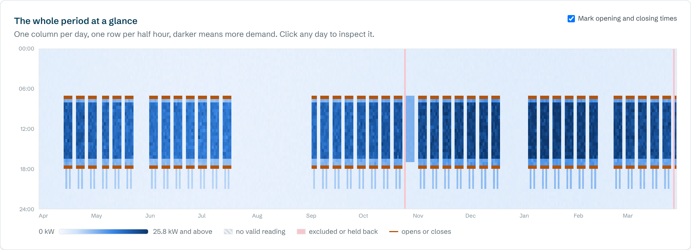

A half-hourly heatmap has one column per day and one row per half hour, with darker colour for higher demand. Normal use shows as a dark band during opening hours; anything dark outside that band, such as nights, weekends and holidays, is use worth checking.
What you're looking at
- Across: days, from the start of the period to the end.
- Down: time of day, from midnight at the top to midnight at the bottom.
- Colour: demand in that half hour, from pale (low) to dark (high).
A year is about 17,500 half hours. A table of that many numbers is unreadable; the heatmap shows all of them at once.

What normal looks like
For a building used on weekdays: a dark horizontal band during working hours, regular pale gaps for weekends, and pale nights. Winter is often a little darker than summer. The edges of the band show when the building really starts and stops.
Patterns worth checking
| What you see | What it usually means |
|---|---|
| A pale block where it should be blank (a holiday week) | Plant running to its normal schedule with nobody in |
| Thin stripes in the evening on the same weekdays | Regular evening use, such as lettings, classes or cleaning |
| Dark band starting well before opening | Heating or ventilation start times set too early |
| Nights that get darker from a certain date | New equipment, or something left on: base load has risen |
| A single dark column | One unusual day: an event, a fault, or a reading error |
| Grey or striped gaps | Missing data, not zero use |

From picture to figure
The heatmap shows where to look; the figures say how much it matters. In the analyser, click any day to see its half hours against a typical day, then use the out-of-hours and unusual-day findings to put a cost on what you've spotted.
Questions people ask
What is a carpet plot?
Another name for the same chart: one column per day, one row per half hour, coloured by demand.
Why are some days grey?
No valid readings. Missing data is shown as missing, not as zero, so gaps don't look like the building was switched off.
Can I see one day in detail?
Yes. In the analyser, click any day on the heatmap to see its half hours against a typical day of the same kind.